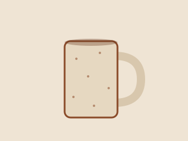
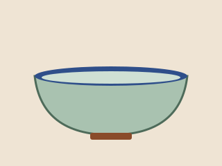
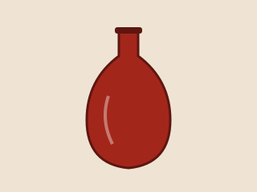
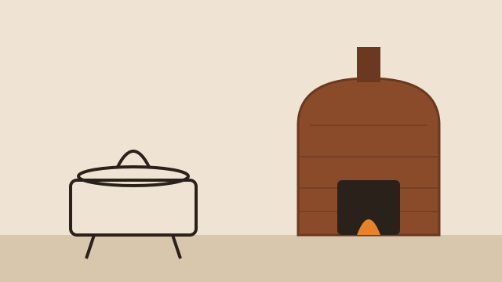

Gallery
A few pieces from recent firings. Every image on this page is served from the site itself, which is exactly what img-src 'self' allows.
Recent pieces




A few pieces from recent firings. Every image on this page is served from the site itself, which is exactly what img-src 'self' allows.



